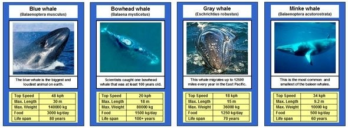
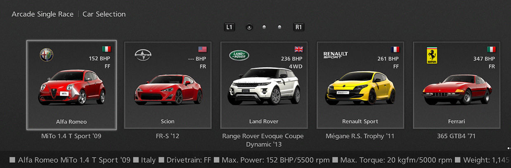

Ruby classes: Blueprinting the world around us
March 19th 2016
They all look the same!
If we make some abstraction, many objects around us look the same and have very similar properties or behaviors.
-
Computers:
Nearly all computers have an operating system, a processor, memory, a power inlet, a number of usb ports, a screensize etc. Even if we look at their processes, they are very similar: they can startup, run speciic programs, hibernate, shut down etc.
-
The animal kingdom:
Since the scientific domain of biology kicked of in the 1800s, scientists have been busy dividing the animal kingdom into classes and subclasses of animals with similar properties and behaviors. Animals we are not familiar with, often look the same to us: whales live in the ocean, they are big, have a typical tailfin etc. but if we look closer, we will notice that one ma be bigger than the other, dive deeper or live in other climates.

-
Computer games:
In games, we love to select avatars, weapons or cars based on their special powers that will allow us to complete our mission. At first sight, all cars have 4 wheels and look suited to do the job. But gamers however will explain you quickly that the top speed, behavior on gravel vs. race tracks etc will make tons of difference.

Humans have a natural tendency to abstract the world around us and classify objects to specific sets of items with similar characteristics or behaviors. These groups of related objects allow us to react faster, without having to observe every single detail about the object.
In computer programming, we apply very similar stategies to organize objects and define responses in a structured and efficient way.
Ruby Classes - Blueprints for similar objects
A class is a blueprint for objects that have similar characteristics or behaviors.
Going back to the example of cars, each of these cars will have an engine, wheels, a top speed, a range etc. the value for these properties may be different, but they all have these values. Similarly, these cars will have common functions that will work in the same way: They can accelerate, drift, brake, crash and so on.
As you start developing more complex computer applications, organization will become essential. You don't want to create thousands of methods and variables to do similar or overlapping things. As a programmer, you want at all times to minimize repitition and reuse code. If you need to call the same method on a bunch of similar objects, it probably makes more sense to create a class.
So how does it work?
Ruby classes are pretty straightforward to create:
- You create a new class by calling the keyword "class" + "ClassName". The names of classes are written in 'CamelCase', unlike variables or objects, which are named in 'snake_case'.
-
If you create a new object within this new class, you can predefine a set of characteristics that will be initialized with the arguments you pass allong during the creation of the class. In the example of cars, below you can add a new car to the application by calling:
car_no_9 = Cars.new(Maserati, Ghibli SS, 2013, V6 Twin Turbo, 330 bhp, 550 Nm, 1800kg, 15 MPG, 550 Miles) - Instance Variables (@): So far, we have created and used variables within a local method. These 'local variables' are specific to the method and can not be accessed outside of it. This is impractical if for example we want to call a method "accelerate" that will calculate the acceleration, based on the engine power, torque and maybe some other variables… We have already specified several variables when we added the car to the collection. To use these values, we can use 'instance variables'. These variables are tied to an object and are accessible to all methods within the same class. Instance variables are identified with the @-symbol as a prefix to the variable-name.
- Instance Methods: Classes share their methods, so it is easy to chain methods together that belong to the same class.
- Many objects (instances) can belong to the same class. Each of these objects will have access to the same 'instance variables' and 'instance methods', but the values will be unique for each of the objects that belong to the class. This allows us to configure very unique cars, based on the same template.
class Cars
def initialize (brand, model, year, engine_type, horsepower, max_power, max_torque, weight, avg_fuel_comsumption, range)
@brand = brand
@model = model
@year = year
@engine_type = engine_type
@horsepower = horsepower
@max_power = max_power
@max_torque = max_torque
@weight = weight
@avg_fuel_consumption = avg_fuel consumption
@range = range
end
def start_engine
#Your code
end
def accelerate
#Code using @horsepower, @max_torque, @weight and many other variables
end
def drift
#Your code
end